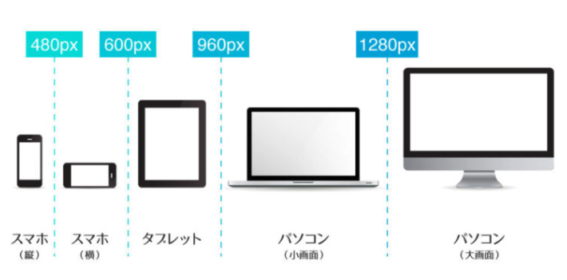

<!DOCTYPE html>
<html>
<head>
<title>25. レスポンシブデザイン.md</title>
<meta http-equiv="Content-type" content="text/html;charset=UTF-8">

<style>
/*---------------------------------------------------------------------------------------------
 *  Copyright (c) Microsoft Corporation. All rights reserved.
 *  Licensed under the MIT License. See License.txt in the project root for license information.
 *--------------------------------------------------------------------------------------------*/

body {
	font-family: "Segoe WPC", "Segoe UI", "SFUIText-Light", "HelveticaNeue-Light", sans-serif, "Droid Sans Fallback";
	font-size: 14px;
	padding: 0 12px;
	line-height: 22px;
	word-wrap: break-word;
}

#code-csp-warning {
	position: fixed;
	top: 0;
	right: 0;
	color: white;
	margin: 16px;
	text-align: center;
	font-size: 12px;
	font-family: sans-serif;
	background-color:#444444;
	cursor: pointer;
	padding: 6px;
	box-shadow: 1px 1px 1px rgba(0,0,0,.25);
}

#code-csp-warning:hover {
	text-decoration: none;
	background-color:#007acc;
	box-shadow: 2px 2px 2px rgba(0,0,0,.25);
}


body.scrollBeyondLastLine {
	margin-bottom: calc(100vh - 22px);
}

body.showEditorSelection .code-line {
	position: relative;
}

body.showEditorSelection .code-active-line:before,
body.showEditorSelection .code-line:hover:before {
	content: "";
	display: block;
	position: absolute;
	top: 0;
	left: -12px;
	height: 100%;
}

body.showEditorSelection li.code-active-line:before,
body.showEditorSelection li.code-line:hover:before {
	left: -30px;
}

.vscode-light.showEditorSelection .code-active-line:before {
	border-left: 3px solid rgba(0, 0, 0, 0.15);
}

.vscode-light.showEditorSelection .code-line:hover:before {
	border-left: 3px solid rgba(0, 0, 0, 0.40);
}

.vscode-dark.showEditorSelection .code-active-line:before {
	border-left: 3px solid rgba(255, 255, 255, 0.4);
}

.vscode-dark.showEditorSelection .code-line:hover:before {
	border-left: 3px solid rgba(255, 255, 255, 0.60);
}

.vscode-high-contrast.showEditorSelection .code-active-line:before {
	border-left: 3px solid rgba(255, 160, 0, 0.7);
}

.vscode-high-contrast.showEditorSelection .code-line:hover:before {
	border-left: 3px solid rgba(255, 160, 0, 1);
}

img {
	max-width: 100%;
	max-height: 100%;
}

a {
	color: #4080D0;
	text-decoration: none;
}

a:focus,
input:focus,
select:focus,
textarea:focus {
	outline: 1px solid -webkit-focus-ring-color;
	outline-offset: -1px;
}

hr {
	border: 0;
	height: 2px;
	border-bottom: 2px solid;
}

h1 {
	padding-bottom: 0.3em;
	line-height: 1.2;
	border-bottom-width: 1px;
	border-bottom-style: solid;
}

h1, h2, h3 {
	font-weight: normal;
}

h1 code,
h2 code,
h3 code,
h4 code,
h5 code,
h6 code {
	font-size: inherit;
	line-height: auto;
}

a:hover {
	color: #4080D0;
	text-decoration: underline;
}

table {
	border-collapse: collapse;
}

table > thead > tr > th {
	text-align: left;
	border-bottom: 1px solid;
}

table > thead > tr > th,
table > thead > tr > td,
table > tbody > tr > th,
table > tbody > tr > td {
	padding: 5px 10px;
}

table > tbody > tr + tr > td {
	border-top: 1px solid;
}

blockquote {
	margin: 0 7px 0 5px;
	padding: 0 16px 0 10px;
	border-left: 5px solid;
}

code {
	font-family: Menlo, Monaco, Consolas, "Droid Sans Mono", "Courier New", monospace, "Droid Sans Fallback";
	font-size: 14px;
	line-height: 19px;
}

body.wordWrap pre {
	white-space: pre-wrap;
}

.mac code {
	font-size: 12px;
	line-height: 18px;
}

pre:not(.hljs),
pre.hljs code > div {
	padding: 16px;
	border-radius: 3px;
	overflow: auto;
}

/** Theming */

.vscode-light,
.vscode-light pre code {
	color: rgb(30, 30, 30);
}

.vscode-dark,
.vscode-dark pre code {
	color: #DDD;
}

.vscode-high-contrast,
.vscode-high-contrast pre code {
	color: white;
}

.vscode-light code {
	color: #A31515;
}

.vscode-dark code {
	color: #D7BA7D;
}

.vscode-light pre:not(.hljs),
.vscode-light code > div {
	background-color: rgba(220, 220, 220, 0.4);
}

.vscode-dark pre:not(.hljs),
.vscode-dark code > div {
	background-color: rgba(10, 10, 10, 0.4);
}

.vscode-high-contrast pre:not(.hljs),
.vscode-high-contrast code > div {
	background-color: rgb(0, 0, 0);
}

.vscode-high-contrast h1 {
	border-color: rgb(0, 0, 0);
}

.vscode-light table > thead > tr > th {
	border-color: rgba(0, 0, 0, 0.69);
}

.vscode-dark table > thead > tr > th {
	border-color: rgba(255, 255, 255, 0.69);
}

.vscode-light h1,
.vscode-light hr,
.vscode-light table > tbody > tr + tr > td {
	border-color: rgba(0, 0, 0, 0.18);
}

.vscode-dark h1,
.vscode-dark hr,
.vscode-dark table > tbody > tr + tr > td {
	border-color: rgba(255, 255, 255, 0.18);
}

.vscode-light blockquote,
.vscode-dark blockquote {
	background: rgba(127, 127, 127, 0.1);
	border-color: rgba(0, 122, 204, 0.5);
}

.vscode-high-contrast blockquote {
	background: transparent;
	border-color: #fff;
}
</style>

<style>
/* Tomorrow Theme */
/* http://jmblog.github.com/color-themes-for-google-code-highlightjs */
/* Original theme - https://github.com/chriskempson/tomorrow-theme */

/* Tomorrow Comment */
.hljs-comment,
.hljs-quote {
	color: #8e908c;
}

/* Tomorrow Red */
.hljs-variable,
.hljs-template-variable,
.hljs-tag,
.hljs-name,
.hljs-selector-id,
.hljs-selector-class,
.hljs-regexp,
.hljs-deletion {
	color: #c82829;
}

/* Tomorrow Orange */
.hljs-number,
.hljs-built_in,
.hljs-builtin-name,
.hljs-literal,
.hljs-type,
.hljs-params,
.hljs-meta,
.hljs-link {
	color: #f5871f;
}

/* Tomorrow Yellow */
.hljs-attribute {
	color: #eab700;
}

/* Tomorrow Green */
.hljs-string,
.hljs-symbol,
.hljs-bullet,
.hljs-addition {
	color: #718c00;
}

/* Tomorrow Blue */
.hljs-title,
.hljs-section {
	color: #4271ae;
}

/* Tomorrow Purple */
.hljs-keyword,
.hljs-selector-tag {
	color: #8959a8;
}

.hljs {
	display: block;
	overflow-x: auto;
	color: #4d4d4c;
	padding: 0.5em;
}

.hljs-emphasis {
	font-style: italic;
}

.hljs-strong {
	font-weight: bold;
}
</style>

<style>
/*
 * Markdown PDF CSS
 */

 body {
	font-family:  "Meiryo", "Segoe WPC", "Segoe UI", "SFUIText-Light", "HelveticaNeue-Light", sans-serif, "Droid Sans Fallback";
}

pre {
	background-color: #f8f8f8;
	border: 1px solid #cccccc;
	border-radius: 3px;
	overflow-x: auto;
	white-space: pre-wrap;
	overflow-wrap: break-word;
}

pre:not(.hljs) {
	padding: 23px;
	line-height: 19px;
}

blockquote {
	background: rgba(127, 127, 127, 0.1);
	border-color: rgba(0, 122, 204, 0.5);
}

.emoji {
	height: 1.4em;
}

/* for inline code */
:not(pre):not(.hljs) > code {
	color: #C9AE75; /* Change the old color so it seems less like an error */
	font-size: inherit;
}

/* Page Break : use <div class="page"/> to insert page break
-------------------------------------------------------- */
.page {
	page-break-after: always;
}

</style>

</head>
<body>
<h1 id="%E3%83%AC%E3%82%B9%E3%83%9D%E3%83%B3%E3%82%B7%E3%83%96%E3%83%87%E3%82%B6%E3%82%A4%E3%83%B3">レスポンシブデザイン</h1>
<h2 id="%E3%81%AD%E3%82%89%E3%81%84">ねらい</h2>
<p>これまでPCでのWebサイト表示を前提に学習してきましたが、最近ではWebサイトのほとんどがスマートフォンで表示されています。<br>
PCで表示されるレイアウトをそのままスマートフォンの画面に表示してしまうと、表示が小さくて見づらいという問題が発生します。<br>
そのため、最近ではPCで表示された場合はPC用のレイアウト、スマートフォンの場合はスマートフォンのレイアウトで表示する &quot;<strong>レスポンシブデザイン</strong>&quot; という考え方が一般的となっています。</p>

<h2 id="%E3%83%AC%E3%82%B9%E3%83%9D%E3%83%B3%E3%82%B7%E3%83%96%E3%83%87%E3%82%B6%E3%82%A4%E3%83%B3%E3%81%A8%E3%81%AF%EF%BC%9F">レスポンシブデザインとは？</h2>
<blockquote>
<p>レスポンシブデザインとは、ユーザーのデバイス（パソコン、タブレット、スマホ）に関係なく、画面サイズに応じて（つまり「レスポンシブ」に）Webサイトの表示を変えることができる仕組みです。</p>
</blockquote>
<p>レスポンシブデザインは画面に応じて柔軟に表示レイアウトを変える仕組みですが、プログラム自体は1つのソースコードで対応します。<br>
デバイスの画面サイズごとにソースを分けたりするのではなく、基本的には1ソースコードで画面サイズに応じてCSSで表示レイアウトを適切なものを表示していきます。</p>
<h2 id="%E3%83%AC%E3%82%B9%E3%83%9D%E3%83%B3%E3%82%B7%E3%83%96%E3%83%87%E3%82%B6%E3%82%A4%E3%83%B3%E3%81%AE%E3%83%A1%E3%83%AA%E3%83%83%E3%83%88">レスポンシブデザインのメリット</h2>
<p>最近ではパソコン・スマートフォン・タブレットとたくさんの種類のデバイスが存在しています。<br>
また、同じスマートフォンでも画面サイズが大きなものもあれば小さいものもありますが、画面サイズごとにプログラムを書いていると膨大な量になるとともに、新しい画面サイズのデバイスが発売されると対応することができません。</p>
<p>そのため、1つのソースコードだけでどんな画面でもレスポンシブ（柔軟）に表示でき、プログラムを書く量が減るというのがもっとも大きなメリットです。</p>

<h2 id="media-query%EF%BC%88%E3%83%A1%E3%83%87%E3%82%A3%E3%82%A2%E3%82%AF%E3%82%A8%E3%83%AA%EF%BC%89">media query（メディアクエリ）</h2>
<p>画面サイズによって細かく表示を変えたい場合は、<strong>media query</strong>（メディアクエリ） で制御します。<br>
ここでいう「画面サイズ」とはブラウザの横幅（px）のことであり、特定の切り替える横幅のことを <strong>ブレイクポイント</strong> といいます。</p>

<ul>
<li>上記の 960px や 1280px がブレイクポイントです。<br>
<br>
<br/></li>
</ul>
<h4 id="media-query%E3%81%AE%E6%8C%87%E5%AE%9A%E6%96%B9%E6%B3%95">media queryの指定方法</h4>
<p>media query はCSSで指定します。</p>
<blockquote>
<p>media query の指定例</p>
</blockquote>
<pre class="hljs"><code><div>@<span class="hljs-keyword">media</span> screen and (max-width: <span class="hljs-number">480px</span>) { 
    <span class="hljs-comment">/*　画面サイズ 480px以下に適用　*/</span>
    <span class="hljs-selector-tag">p</span> {
        <span class="hljs-attribute">color</span>: blue;
    }
}
@<span class="hljs-keyword">media</span> screen and (min-width: <span class="hljs-number">480px</span>) and (max-width: <span class="hljs-number">960px</span>) {
    <span class="hljs-comment">/*　画面サイズ 480pxから960pxまで適用　*/</span>
    <span class="hljs-selector-tag">p</span> {
        <span class="hljs-attribute">color</span>: green;
    }
}
@<span class="hljs-keyword">media</span> screen and (min-width: <span class="hljs-number">960px</span>) {
    <span class="hljs-comment">/*　画面サイズ 960px以上から適用　*/</span>
    <span class="hljs-selector-tag">p</span> {
        <span class="hljs-attribute">color</span>: yellow;
    }
}
</div></code></pre>
<p>「<strong>max-width:○○px</strong>」だと横幅○○px以下、「<strong>min-width:○○px</strong>」だと横幅○○px以上、の指定になります。</p>
<p>ブラウザの横幅をマウスで調整して、それぞれテキストの色が変わることを確かめてみましょう。</p>

<h1>確認問題</h1>
<h2>問題1.以下のコードの意味を選んでください</h2>
<p>@media screen and (max-width: 480px)</p>
<p>
<input type="radio" name="a">画面サイズ480px以上になると適用<br>
<input type="radio" name="a">画面サイズ480pxぴったりの時に適用<br>
<input type="radio" name="a">画面サイズ480px以下になると適用<br><br>
</p>

<!-- 折り畳み展開ポインタ -->
<div onclick="obj=document.getElementById('open').style; obj.display=(obj.display=='none')?'block':'none';">
<a style="cursor:pointer;">▼ 解答はこちらをクリックすると見れます</a>

<!--// 折り畳み展開ポインタ -->

<!-- 折り畳まれ部分 -->
<div id="open" style="display:none;clear:both;">

<!--ここの部分が折りたたまれる＆展開される部分になります。
自由に記述してください。-->
 <br> <br>
<p> 「画面サイズ480px以下になると適用」が正解</p>
</div>
</div>


<br> <br>
<h2>問題2.以下のコードの意味を選んでください</h2>
<p>@media screen and (min-width: 480px) and (max-width: 960px)</p>
<p>
<input type="radio" name="a">画面サイズ480px以上960px以下の時に適用<br>
<input type="radio" name="a">画面サイズ480px以下の時と960px以上の時に適用<br>
<input type="radio" name="a">画面サイズ480pxか960pxの時に適用<br><br>
</p>

<!-- 折り畳み展開ポインタ -->
<div onclick="obj=document.getElementById('two').style; obj.display=(obj.display=='none')?'block':'none';">
<a style="cursor:pointer;">▼ 解答はこちらをクリックすると見れます</a>

<!--// 折り畳み展開ポインタ -->

<!-- 折り畳まれ部分 -->
<div id="two" style="display:none;clear:both;">

<!--ここの部分が折りたたまれる＆展開される部分になります。
自由に記述してください。-->
 <br> <br>
<p>「画面サイズ480px以上960px以下の時に適用」が正解</p>
</div>
</div>


<br> <br>
<h2>問題3.以下のコードの意味を選んでください</h2>
<p>@media screen and (min-width: 960px)</p>
<p>
<input type="radio" name="a">画面サイズ960px以下になると適用<br>
<input type="radio" name="a">画面サイズ960px以上になると適用<br>
<input type="radio" name="a">画面サイズ960pxぴったりの時に適用<br><br>
</p>


	<!-- 折り畳み展開ポインタ -->
<div onclick="obj=document.getElementById('three').style; obj.display=(obj.display=='none')?'block':'none';">
<a style="cursor:pointer;">▼ 解答はこちらをクリックすると見れます</a>

<!--// 折り畳み展開ポインタ -->

<!-- 折り畳まれ部分 -->
<div id="three" style="display:none;clear:both;">

<!--ここの部分が折りたたまれる＆展開される部分になります。
自由に記述してください。-->
 <br> <br>
<p>「画面サイズ960px以上になると適用」が正解</p>
</div>
</div>

<h1>解説動画</h1>
<iframe width="1000" height="600" src="https://www.youtube.com/embed/Dz36K_Bkxlc?si=u97qohPo-DNIBPNZ" title="YouTube video player" frameborder="0" allow="accelerometer; autoplay; clipboard-write; encrypted-media; gyroscope; picture-in-picture; web-share" referrerpolicy="strict-origin-when-cross-origin" allowfullscreen></iframe>

</body>
</html>
